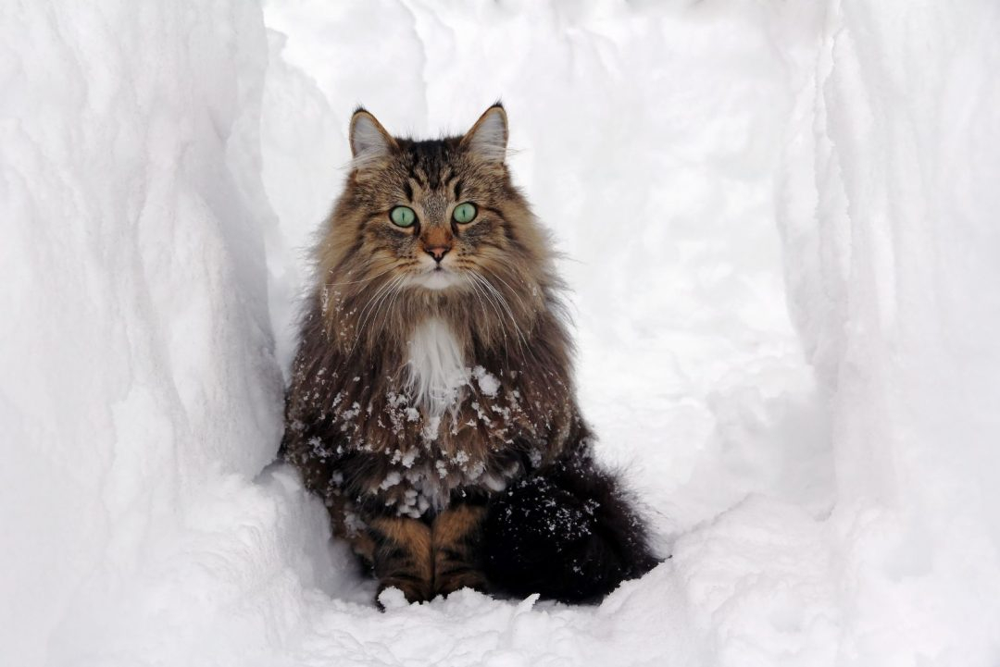

Cat
The cat (Felis catus) is a small carnivorous mammal. It is the only domesticated species in the family Felidae...
Cats are similar in anatomy to the other felid species, with a strong flexible body, quick reflexes...
Female domestic cats can have kittens from spring to late autumn...

A Tabby cat in snowy weather

The hooked papillae on a cat's tongue act like a hairbrush